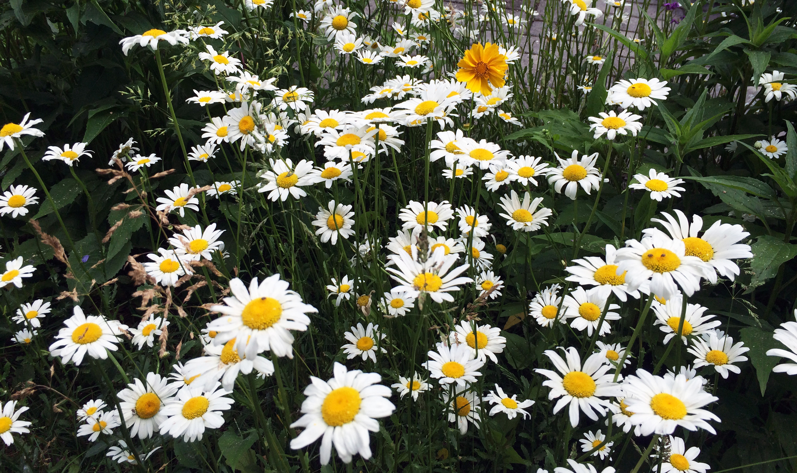

Native grass and wildflower seeds for the home gardener

Green Man Seed Co. is a mail-order seed distributor based in New York's Hudson Valley, providing flower bulbs, native grass and wildflower seeds, and bareroot perennials.
All products are certified organic. Our greenhouses are powered by solar panels and irrigated using a rainwater collection system.
Why grow native plants?
Native plants require little maintenance once established, and require less water than exotics.
Native plants provide protective shelter and essential food for many birds and mammals.
Native plants help combat climate change! Many natives are effective at storing carbon dioxide.
Native plants provide nectar for pollinators, including hummingbirds, native bees, butterflies, moths, and bats.
To request a catalog, send your mailing address to the Green Man.